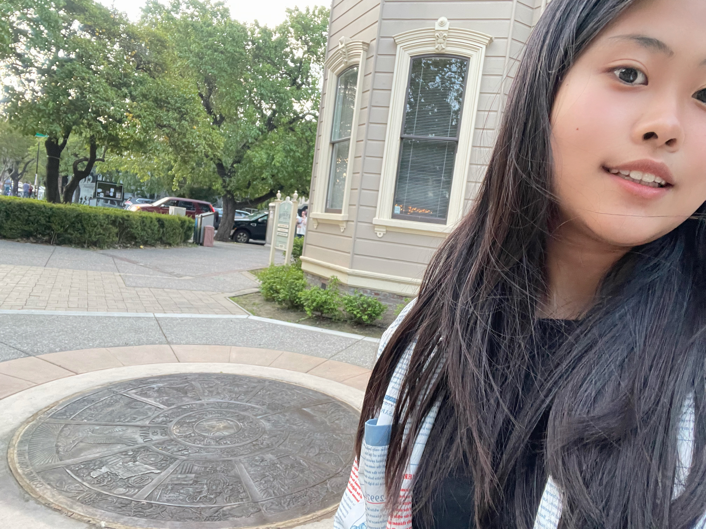

I like the part when the article is talking about the design inspiration. I feel like it is really cool to think about the whole idea of the seal. I have not take a close look at the seal before. So when I get to know what is the story behind it, it gives me the sense of why it is there and how it is important for the city. Then looking into Susan Shelton's page, I feel like she do a lot of interesting things. It is cool to see how much she can get and how much ideas she has. I really loved the bird pottery portion. I feel like they look elegant and well-designed.
